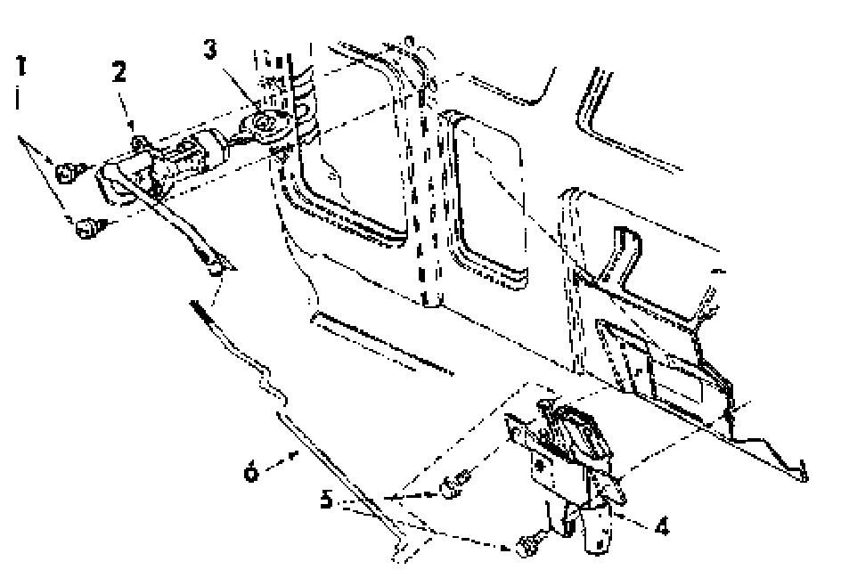

Trunk / Liftgate Lock Cylinder: Service and Repair
Rear lid lock cylinder, assembly

1 - Screw
- 4 Nm (35 in. lb)
2 - Rear lid lock assembly
- To remove, remove screws -1- and disconnect push rod -6- from lock assembly.
3 - Key
- Must be inserted to remove lock cylinder
4 - Rear lid lock
5 - Bolts
- 7 Nm (62 in. lb)
6 - Push rod